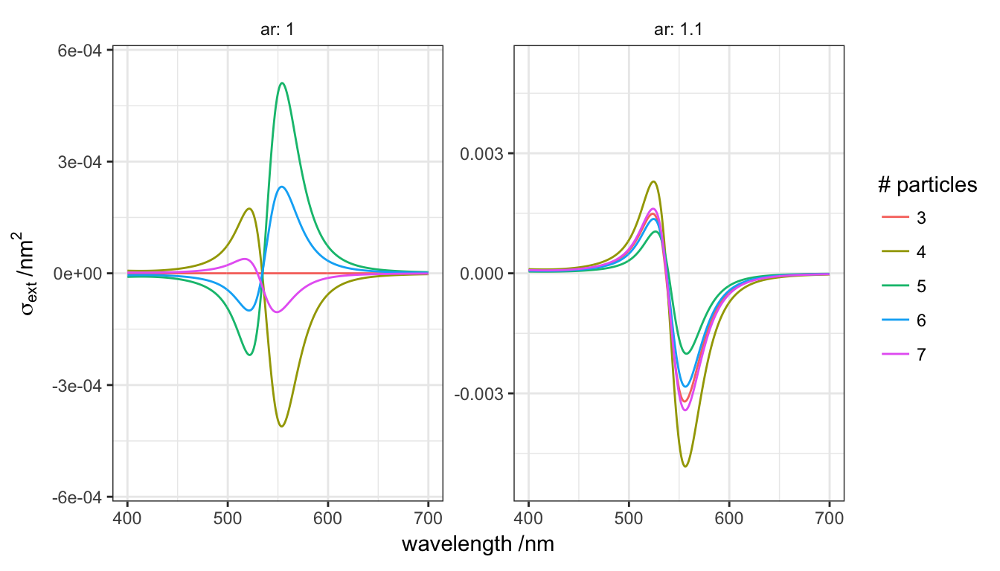

wvl <- seq(400, 700)
gold <- epsAu(wvl)
ar <- 2
N <- 5
cl <- cluster_helix(N, R0=12, pitch=15,
delta=pi/2, delta0=0, right=TRUE,
a=5/ar, b=5/ar, c=5,
angles="helix")
simulation <- function(N=3, scale=1, ar=1, ...){
cl <- cluster_helix(N, R0=12*scale, pitch=15*scale,
delta=pi/2, delta0=0, right=TRUE,
a=5/ar*scale, b=5/ar*scale, c=5*scale,
angles="helix")
spectrum_oa(cl, material = gold, medium=1.33)
}
params <- expand.grid(N=seq(3, 7), ar= c(1, 1.1))
comparison <- mdply(params, simulation, .progress = "text")